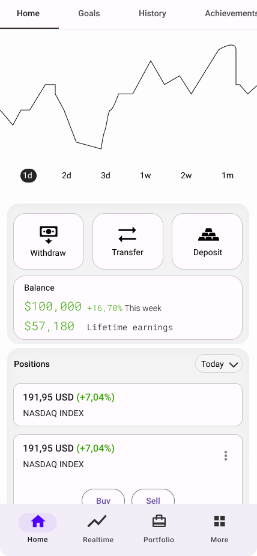

Velocity is a project I worked on during my internship at a design agency in Bangkok.
The main scope was to develop a mobile trading app for the Thai market. Through Velocity users can earn capital and trade stocks in a safe enviroment. Velocity makes it possible to trade, sell and buy stocks at any time for anyone.
We initiated the project by exploring the
problem space and defining
the problem.
I also wrote a project brief and formed a timeplan for the
project.
The threshold for entering the stock market is too high for most Thais. Only about 3% of the country participates in the stock market. We want to increase that number by creating an app that makes stock investment easier for Thais. Key problems are :
"How can we make trading more accessible for local Thais"
After understanding the problem I conducted neccessary research to understand who our users are and their goals.
A competitor analysis was made to find market gaps, current solutions, and weak points. For the analysis, I found a direct and indirect competitor.
Understanding market demographics is key so I conducted research into market demographics and the current state of retail investors in Thailand. This is what I found:
With these, in mind, I constructed two proto- personas based on the millennial day trader and the newer Gen z trader.


After establishing the problem and carving out potential users I began to work on the design of the app and the user journey.
I mapped out the order in which users would complete key tasks like
purchasing or selling a stock. This allowed me to understand the
steps users took and the features needed to complete their tasks.
After a flow was constructed I began drawing paper wireframes by the
flow which I, unfortunately, do not have photos for.


A prototype was made in Figma. Due to the time constraints i was able to only complete two screens.
The user is greeted by current positions and balance. I opted to move the secondary navigation to the top. I received feedback that the navigation cut off the screen weirdly in the middle and was distracting. I also decided to add more information in the form of cards showing current indexes. A graph was added to showcase user balance journey/history.

The stock screen remains mostly unchanged. The user is greeted by
current positions and numbers.
This screen was the biggest challenge for me as I had to cram in
so much information onto one screen
while still keeping everything legible and not overwhelm the user.